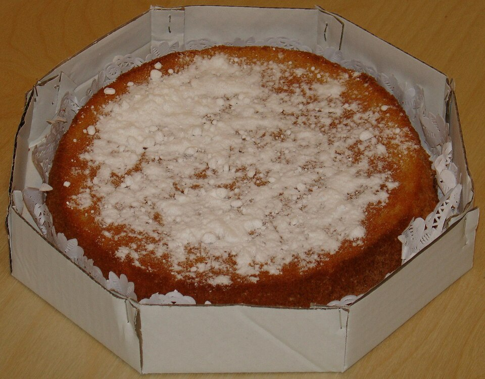
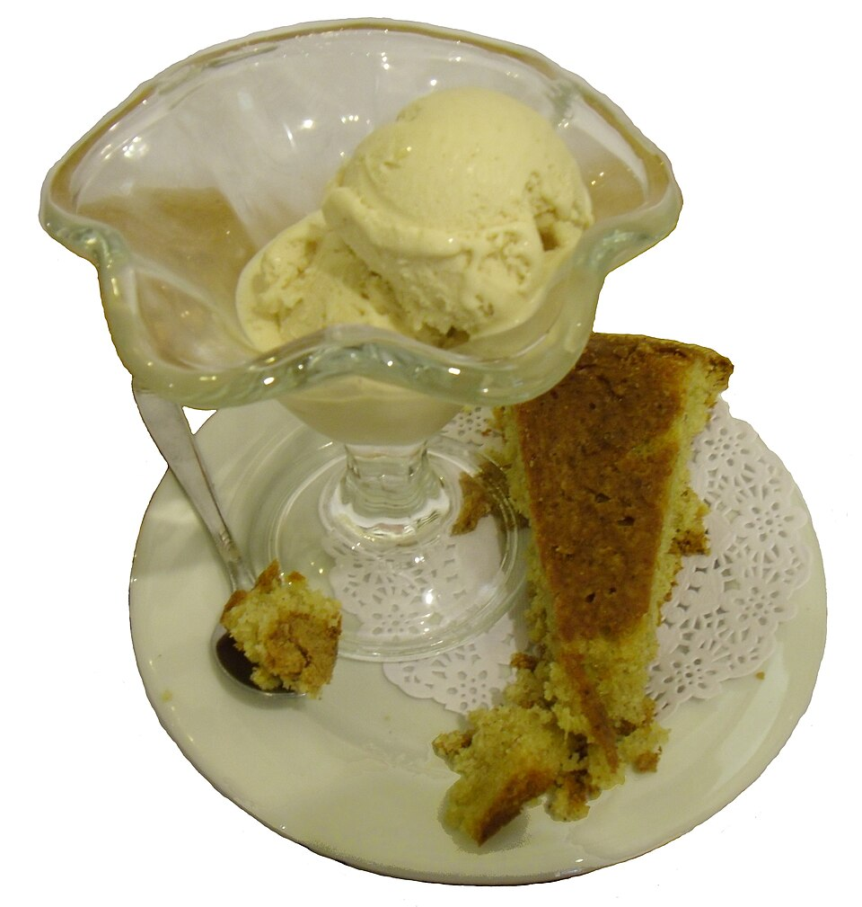
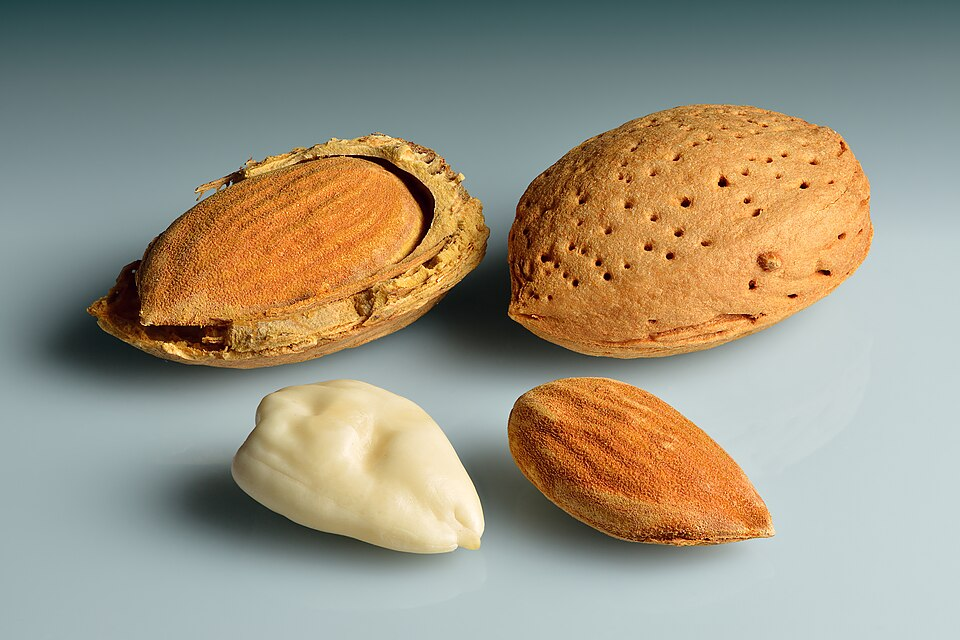
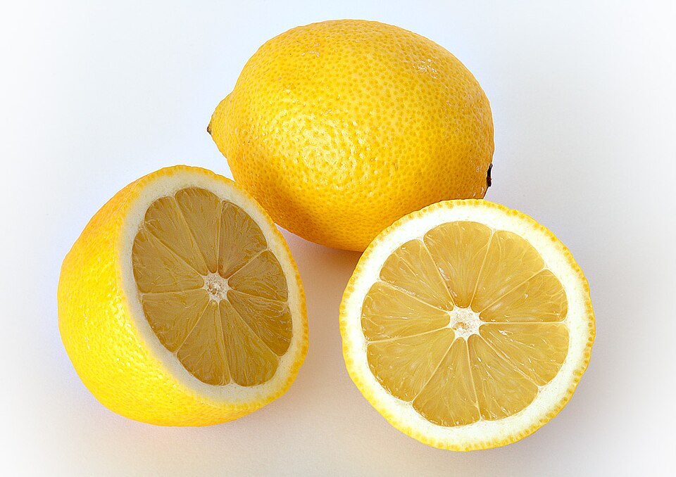

Del forn · Postres i berenars
Gató d’ametlla.
Unes postres amb sabor de casa.

L’ametlla, protagonista
El gató d’ametlla és un dels dolços tradicionals de Mallorca. L’ametlla mòlta és la protagonista d’aquest pastís, que destaca pel seu aroma i una textura tendra. És habitual servir-lo amb sucre en pols per damunt i una bolla de gelat d’ametlla al costat.
Aquesta versió casolana s’elabora amb ametlla, ous, sucre, ratlladura de llimona i canyella, sense afegir-hi farina. Els blancs d’ou pujats a punt de neu aporten aire a la massa i ajuden a aconseguir una textura esponjosa. Per conservar aquest aire, convé incorporar-los amb moviments suaus.
El gató es pot presentar com a postres o com a part d’un berenar. Abans de desemmotllar-lo, és convenient deixar-lo refredar perquè conservi la forma. Aquesta proposta està pensada per a vuit racions i es pot servir tot sol o acompanyat de gelat.
Mans a la cuina
Elaboració passa a passa
-
Prepara el forn i el motlle
Escalfa el forn a 170 °C amb calor a dalt i a baix. Unta un motlle de 22 cm de diàmetre i cobreix-ne la base amb paper de forn.
-
Separa els ous
Posa els vermells dins un bol i els blancs dins un altre de net i sec.
-
Bat els vermells
Bat-los amb el sucre fins que la mescla sigui clara i escumosa. Incorpora-hi la ratlladura de llimona i la canyella.
-
Afegeix l’ametlla
Incorpora l’ametlla mòlta a poc a poc fins que quedi ben integrada.
-
Puja els blancs
Bat-los a punt de neu. Incorpora’n primer una petita part per alleugerir la massa i afegeix-hi la resta amb moviments suaus de baix cap a dalt.
-
Enforna el gató
Aboca la massa al motlle i cou-la uns 35–45 minuts. Comprova el centre amb un escuradents: ha de sortir sense massa crua adherida.
-
Refreda i decora
Deixa’l refredar abans de desemmotllar-lo. Acaba amb sucre en pols i acompanya’l amb gelat d’ametlla, si et fa ganes.
Els detalls també compten
Una mirada als ingredients



Cuina amb companyia
La recepta en vídeo
Una altra versió de gató d’ametlla, de Maria Gibert, al canal Recetas Mallorquinas.
Les quantitats i les passes del vídeo poden diferir de la nostra proposta casolana.
Mira el vídeo directament a YouTube
El reproductor és un servei extern de YouTube.